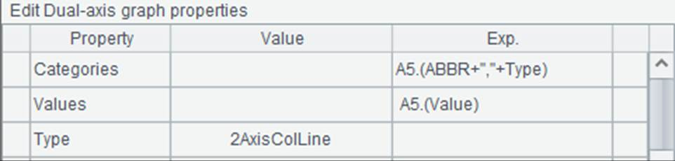
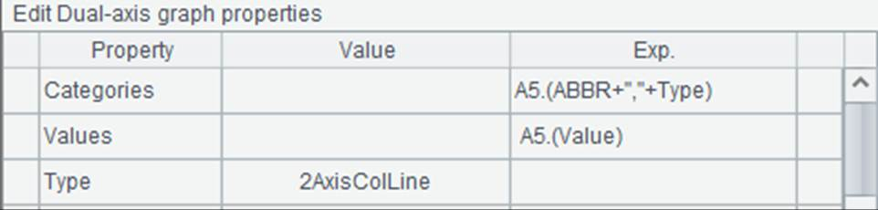
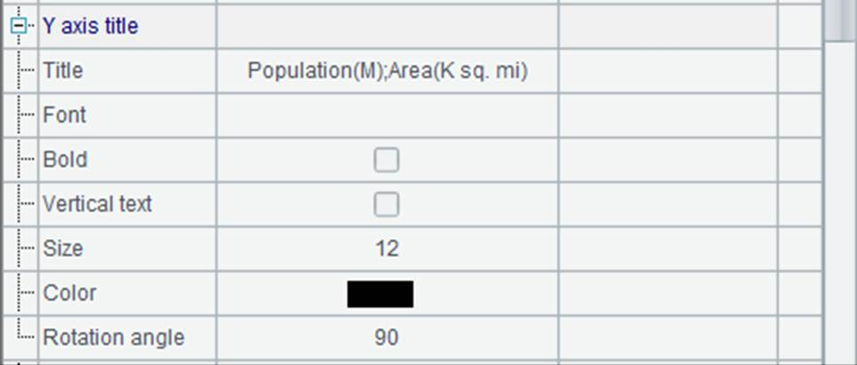
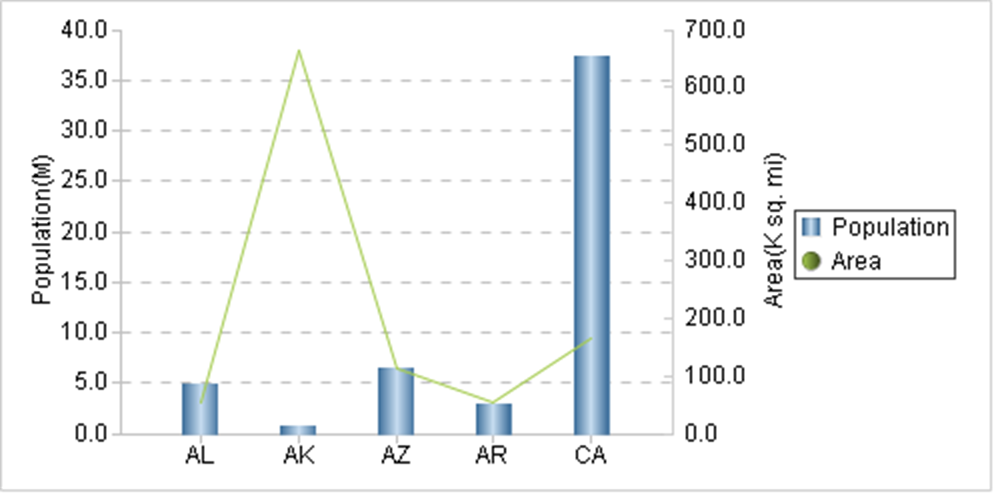
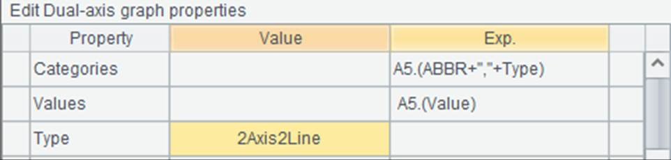
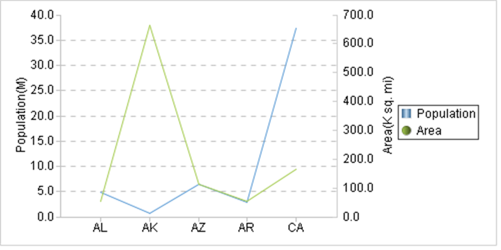

You use dual-axis graph to plot dual-axis column-and-polyline charts or dual-axis polyline charts. Below is the plotting algorithm for a dual-axis column-and-polyline chart:
|
|
A |
|
1 |
=canvas() |
|
2 |
=demo.query("select * from STATES where STATEID<6") |
|
3 |
=A2.new(ABBR,"Population":Type,POPULATION/1000000:Value) |
|
4 |
=A2.new(ABBR,"Area":Type,AREA/1000:Value) |
|
5 |
=A3|A4 |
|
6 |
=A1.plot("Graph2Axis","categories":A5.(ABBR+","+Type),"values": A5.(Value)"yTitle":"Population(M);Area(K sq. mi)","yTitleAngle":90,"axisRightColor":-3355444) |
|
7 |
=A1.draw@p(500,250) |
A5 concatenates records of population and those of areas to generate data for chart plotting:

Data property setting for a dual-axis column-and-polyline chart is similar to that for a column chart with both category and series:

During setting the properties, titles are added for the two vertical axes with units designated. In this case a semicolon is used to separate them:

A6 removes shading effect for the polyline and increases the line thickness. Now here¡¯s A7¡¯s plotting result:

The data for chart plotting in the above algorithm includes only two series of data: population and area of each state. Plot the first data series as columns with the left vertical axis and plot the second data series as a polyline with the right vertical axis. If there are more than two series of data, plot them as columns and lines evenly.
Modify Type property of the dual-axis graph to 2Axis2Line:

Then a dual-axis polyline chart will be plotted, in which the first data series will be plotted as a polyline with the left vertical axis. The plotting result is:
